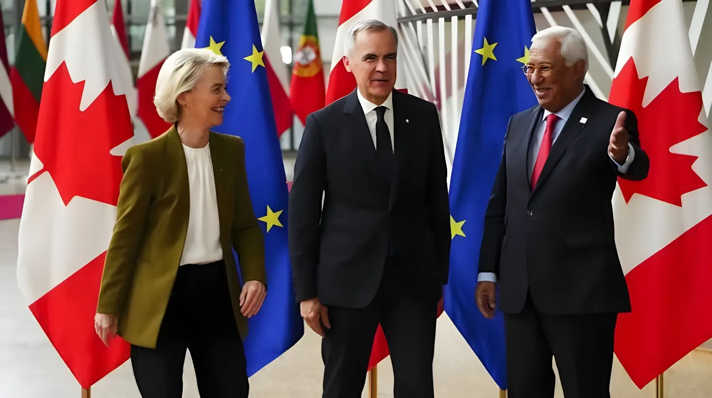

Le 16 septembre 2026, lors de son discours annuel sur l'état de l'Union devant le Parlement européen réuni à Strasbourg, la présidente de la Commission européenne Ursula von der Leyen a proposé au Canada de devenir le premier « membre associé » de l'Union — un statut qui n'existe dans aucun traité européen. Le Premier ministre canadien Mark Carney, premier chef de gouvernement étranger invité à assister à ce discours, a salué le lendemain devant les eurodéputés l'idée d'une « nouvelle alliance », tout en écartant toute adhésion pleine et entière. À Washington, Donald Trump a immédiatement dénoncé un « acte hostile » et menacé l'UE de nouveaux droits de douane.
C'est au cœur de son discours annuel sur l'état de l'Union, prononcé le 16 septembre 2026 devant le Parlement européen à Strasbourg, qu'Ursula von der Leyen a lancé son invitation. S'adressant directement à Mark Carney, assis dans l'hémicycle, elle a dit vouloir porter les relations avec le Canada « au plus haut niveau possible » et travailler avec lui pour ouvrir au pays la voie vers le statut de premier membre associé de l'Union. La présidente de la Commission a accompagné cette offre d'une formule appelée à être beaucoup citée : les deux partenaires partagent un même océan, un même socle de valeurs et une même façon de voir le monde, et construiront désormais leur avenir commun.
L'annonce est d'autant plus remarquable qu'elle rompt avec une ligne constante de Bruxelles : l'UE a toujours refusé de créer des statuts d'appartenance intermédiaires. La proposition formulée en mai 2026 par le chancelier allemand Friedrich Merz de faire de l'Ukraine un « membre associé » avant une éventuelle adhésion pleine et entière avait ainsi été accueillie avec une grande réserve par la plupart des capitales. Selon la presse bruxelloise, von der Leyen aurait elle-même ajouté ce passage à son discours au dernier moment.
Le geste symbolique est double. Jamais un dirigeant non européen n'avait été convié au discours sur l'état de l'Union ; Mark Carney a en outre pris la parole à son tour devant les eurodéputés le lendemain, jeudi 17 septembre, une distinction rarissime.
Le principal obstacle est juridique. Aucune disposition des traités européens ne définit une catégorie de « membre associé ». Et une adhésion classique est exclue : l'article 49 du traité sur l'Union européenne réserve la qualité de candidat aux États européens, ce que le Canada n'est pas géographiquement. L'invitation ne peut donc pas déboucher sur un vingt-huitième siège au Conseil.
La base juridique mobilisable est l'article 217 du traité sur le fonctionnement de l'UE, qui autorise la conclusion d'accords d'association avec des pays tiers, caractérisés par des droits et obligations réciproques, des actions communes et des procédures particulières. C'est sur ce fondement que reposent, par exemple, les accords d'association signés en 2014 avec l'Ukraine, la Géorgie et la Moldavie. L'article 218 fixe la procédure de ratification : le Parlement européen doit approuver ces accords, et lorsqu'ils dépassent le seul champ commercial, les vingt-sept parlements nationaux doivent également se prononcer.
| Formule | Contenu | Exemples |
|---|---|---|
| Adhésion (art. 49 TUE) | Droit de vote plein, réservé aux États européens | Les 27 États membres |
| Espace économique européen | Marché unique, mais reprise des règles de l'UE sans pouvoir les écrire | Norvège, Islande, Liechtenstein |
| Accords bilatéraux | Accès sectoriel négocié au marché unique | Suisse |
| Accord d'association (art. 217 TFUE) | Coopération renforcée sur des domaines définis | Ukraine, Géorgie, Moldavie, Chili |
| « Membre associé » | Statut inédit, contours à définir | Aucun à ce jour |
Signature du CETA entre l'UE et le Canada, puis entrée en vigueur provisoire de l'accord après l'approbation du Parlement européen en février 2017.
Le chancelier allemand Friedrich Merz propose aux dirigeants européens un statut d'« adhésion associée » pour l'Ukraine, sans droit de vote. L'idée reçoit un accueil froid.
Le Canada devient le premier pays non membre de l'UE à rejoindre SAFE, le programme européen de financement de l'armement. Des discussions s'engagent sur Erasmus+, Horizon Europe et la reconnaissance des qualifications professionnelles.
Discours sur l'état de l'Union : Ursula von der Leyen invite le Canada à devenir le premier « membre associé » et propose de passer « du CETA à une Alliance pour l'avenir ».
Donald Trump juge la perspective « ridicule », y voit un « acte hostile » et menace d'imposer de très lourds droits de douane, voire de cesser une partie du commerce avec l'Europe.
Mark Carney s'adresse au Parlement européen, salue l'ambition d'une nouvelle alliance mais exclut une adhésion pleine et entière, et annonce qu'un vote aura lieu au Parlement canadien.
Un sommet UE-Canada est prévu à Montréal pour préciser le contenu de cette alliance.
Derrière la formule diplomatique, Ursula von der Leyen a esquissé un contenu très concret. Elle a appelé à dépasser le seul accord commercial pour bâtir une « Alliance pour l'avenir » créant un espace commun de prospérité et de sécurité économique : industrie avancée, alliance technologique, intégration des bases industrielles de défense, projet phare commun dans l'Arctique, énergie, minerais critiques et batteries, intelligence artificielle, quantique et cybersécurité. Elle a également proposé que le Canada rejoigne le futur « Conseil européen de sécurité » dont elle souhaite la création. La liste ressemble moins à un traité de commerce qu'à l'inventaire des dépendances industrielles des économies occidentales.
Certaines briques sont déjà posées : le Canada a été cette année le premier pays tiers à rejoindre le programme d'armement européen SAFE, et Ottawa discute avec Bruxelles d'une participation à Erasmus+, aux financements de recherche d'Horizon Europe et d'une reconnaissance mutuelle des qualifications des travailleurs.
« Nous partageons un même océan, un même socle de valeurs, une même façon de voir le monde. Et désormais, nous allons aussi construire notre avenir commun. »
— Ursula von der Leyen, discours sur l'état de l'Union, 16 septembre 2026« Nous ne sommes pas des alliés de circonstance. Nous ne cherchons pas à conclure des accords où l'un gagne ce que l'autre perd. »
— Mark Carney, Parlement européen, 17 septembre 2026Devant les eurodéputés, Mark Carney a défendu un partenariat renforçant à la fois la souveraineté du Canada et celle de l'Europe, estimant que les deux ensembles sont plus forts ensemble. Mais il a fixé deux limites nettes : le Canada ne cherche pas l'adhésion, et il n'entend pas abandonner des pans de souveraineté. Interrogé sur le terme employé par la Commission, il a renvoyé la question du vocabulaire aux Européens et insisté sur le fond ; le gouvernement canadien préfère d'ailleurs parler d'« Alliance pour l'avenir ». Il a enfin annoncé que le futur accord ferait l'objet de débats et d'un vote au Parlement canadien, où les conservateurs exploitent déjà le flou entourant ce statut.
Aux États-Unis, la réaction a été immédiate. Donald Trump a qualifié l'idée de ridicule, y a vu un acte hostile et menacé d'imposer de très lourds droits de douane, voire de cesser une partie des échanges avec l'Europe. La Commission a répondu que le renforcement du partenariat avec le Canada n'est dirigé contre personne et vise seulement à accroître la force commune des deux partenaires.
| Acteur | Position |
|---|---|
| Commission européenne | Propose le statut ; « pas dirigé contre quiconque » |
| Mark Carney | Favorable à une alliance ; refuse l'adhésion et toute perte de souveraineté |
| Parlement européen | Accueil très favorable ; Renew appelle d'abord à ratifier le CETA |
| Donald Trump | Dénonce un « acte hostile » et menace de droits de douane |
| États membres | Réactions prudentes : dix n'ont pas encore ratifié le CETA |
L'invitation adressée au Canada dit surtout quelque chose de l'époque : deux partenaires historiques de Washington cherchent, chacun de leur côté, à réduire leur exposition à un allié devenu imprévisible, et se découvrent un intérêt commun à se rapprocher. Le Canada, engagé dans une guerre commerciale avec les États-Unis dont il dépend massivement, y voit un levier de diversification ; l'Union, confrontée aux droits de douane américains et à la concurrence chinoise, y gagne un partenaire riche en minerais critiques, en énergie et en compétences.
Mais l'annonce reste, à ce stade, un signal politique plus qu'un projet juridique. Tout est à écrire : le contenu du statut, sa base légale, les droits qu'il conférerait, la place des institutions. Et le chemin passe par des parlements nationaux qui n'ont pas tous ratifié un accord commercial signé il y a dix ans. Le sommet de Montréal, fin octobre, dira si l'« Alliance pour l'avenir » est un tournant dans l'architecture des relations extérieures de l'Union ou une belle formule de tribune.